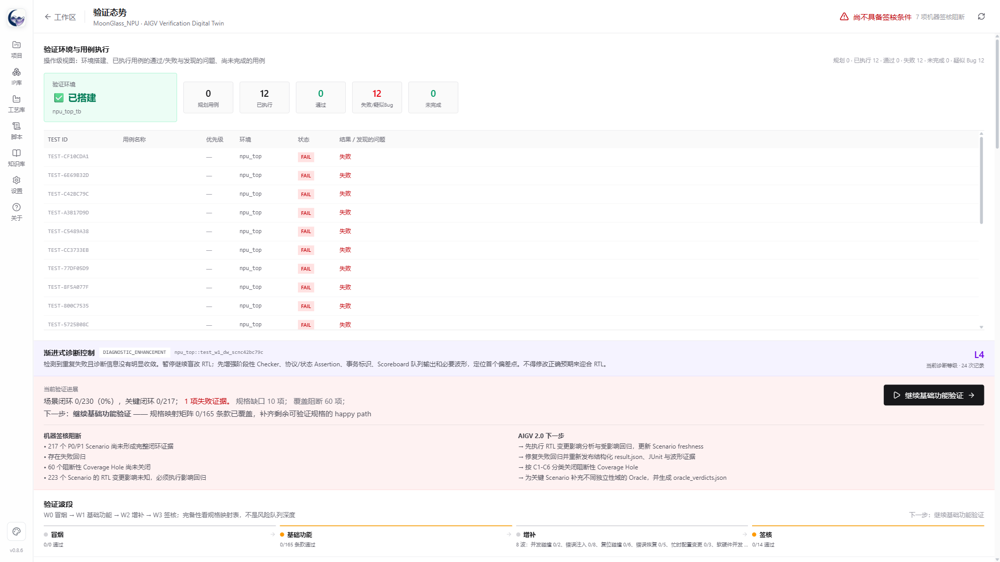
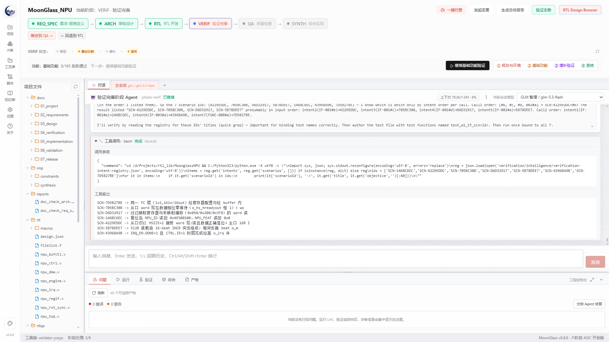
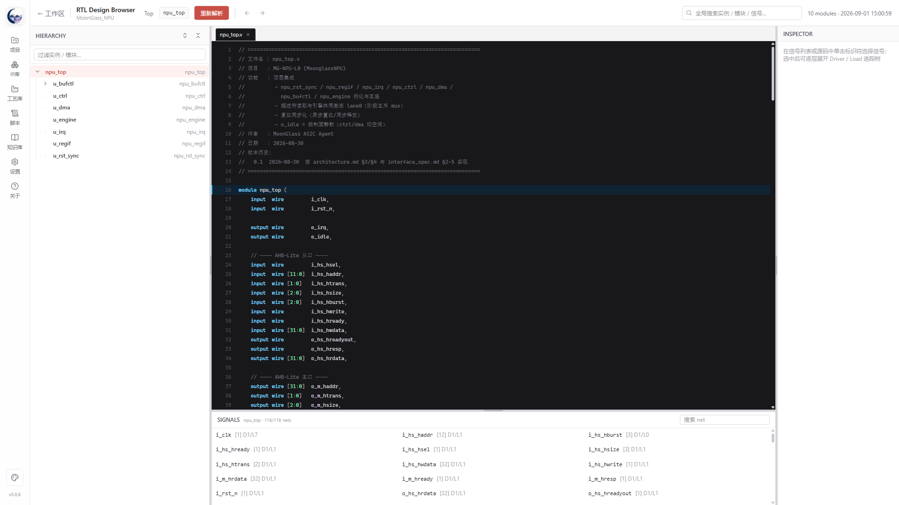

本文系统梳理 MoonGlass ASIC Design Agent 从 v0.6.0 到 v0.9.0 的工程演进。该阶段的关键变化并非简单增加模型提示词或 EDA 命令，而是逐步把 ASIC 开发中的流程状态、验证语义、原始证据、长上下文、任务边界、RTL 修改和并行验证纳入确定性软件控制。v0.6.0 建立证据驱动的验证闭环；v0.7.0 引入风险驱动 Verification Intelligence、开源 Formal 通道和验证态势；v0.8.x 形成 AIGV 2.0、W0-W3 验证波段、批次隔离和可解释签核；v0.9.0 将 Pi Coding Agent 的会话粒度从“阶段”下沉到“任务”，并通过 artifact 索引、修复专用会话、RTL 哈希新鲜度和三层写保护构成可审计的并行验证控制。本文给出问题动机、系统架构、版本映射、关键机制、可检验假设、局限与后续研究方向。
1. 研究背景与问题定义
生成式模型已经能够编写相当规模的 RTL、测试平台和脚本，但“能生成”与“能交付”之间仍存在明显鸿沟。真实芯片工程要求需求与规格可追踪、架构决策可解释、RTL 可综合、验证结论可复现、变更影响可传播、工具失败不可冒充设计通过，并且所有签核结论必须能回到原始证据。长时间运行的 Agent 还会面临上下文膨胀、重复调试、任务边界消失、模型服务波动和界面渲染压力。
MoonGlass 将问题定义为：如何把通用 Coding Agent 嵌入 ASIC IP 开发流程，使其成为受状态机、工具链、证据和权限边界约束的工程协作者。该问题可分解为四个研究问题：
- RQ1：如何把自然语言规格转化为可追踪、可执行、可签核的验证对象？
- RQ2：如何防止长会话和多轮失败调试造成上下文污染与无效循环？
- RQ3：当验证 Agent 发现 RTL 缺陷并触发修改时，如何保持证据新鲜度和责任边界？
- RQ4：如何在不虚构“绝对隔离”的前提下，构建可审计的并行验证门控？
2. 材料与研究方法
本文采用设计科学与工程案例研究相结合的方法。事实基础来自 MoonGlass 仓库的版本标签、提交历史、源代码、自动化脚本、开发变更记录和方法学文档。分析区间从 v0.6.0 发布提交开始，到 package version 更新为 v0.9.0 为止。
| 材料 | 用途 | 证据边界 |
|---|---|---|
| Git 标签与提交历史 | 还原功能出现顺序和设计决策 | 提交存在不等于功能已在所有项目验证 |
CHANGELOG-DEV.md | 还原问题、修复和验收语义 | 属于开发记录，不是第三方审计报告 |
| AIGV、长时 Agent 与会话设计文档 | 提取方法学模型和系统假设 | 部分指标仍需更多真实 IP 样本验证 |
| Smoke、typecheck、build 与运行时检查 | 确认局部实现可执行 | 不替代商业 EDA 和流片签核 |
在该区间内，仓库相对 v0.6.0 共涉及约 275 个文件、47,140 行新增和 840 行删除。该数字仅表示系统扩展规模，本文不以代码行数作为质量结论。
3. 总体演进图景
模型上下文可见
总体报告增强
开源 Formal
验证态势与托管韧性
W0-W3 波段
批次隔离与可解释签核
RTL 修复隔离
并行验证门控
| 维度 | v0.6.0 | v0.7.0 | v0.8.x | v0.9.0 |
|---|---|---|---|---|
| 验证对象 | 测试与证据 | 风险、Intent、Scenario | Verification Space、Oracle、Mutation、Residual Risk | 任务、修复血缘与证据新鲜度 |
| Agent 粒度 | 阶段会话 | 阶段会话 | 阶段 + VERIF 批次 | 阶段入口 + 独立任务会话 |
| 调度控制 | 人工推进为主 | 托管可恢复 | 波段与聚类批次 | 确定性任务切换和修复门控 |
| 签核表达 | 通过/失败及日志 | 验证态势与阻断 | 机器签核建议和残余风险 | 附带 RTL 版本、任务血缘和修改审计 |
4. v0.6.0：从“运行工具”到“证据驱动闭环”
v0.6.0 的核心贡献是将验证完成的判断从 Agent 自述迁移到工程证据。系统开始显式记录模型相关的上下文容量与 Token 使用，恢复会话模型显示，允许既有项目编辑元数据，并扩展总体报告。更重要的是，验证结论需要关联测试、日志、覆盖率和 RTL 原始文件，而不是接受主 Agent 的“验证完成”声明。
4.1 证据对象化
MoonGlass 将测试结果、工具日志、覆盖率、RTL 哈希、需求映射和未决问题逐步对象化。这样做改变了门禁的语义：门禁不再只检查“文件是否存在”，而是检查证据是否与当前设计一致、是否覆盖对应规格、是否仍然新鲜。
4.2 模型上下文可观测性
不同模型具有不同上下文窗口和计费方式。v0.6.0 开始显示会话 Token 使用并采用模型特定上下文上限，避免把缓存命中量误当成上下文容量。该能力后来成为 v0.8-v0.9 上下文治理的基础。
5. v0.7.0：风险驱动 Verification Intelligence 与验证态势
v0.7.0 将验证从结果收集扩展为风险驱动的验证智能。系统加入 Verification Intent、风险场景、分级 RTL 修复、开源 Formal 回路和全屏验证态势，并开始处理真实工程中的 JSON 原子发布、长会话白屏、托管门禁中断和形式工具语法能力差异。
5.1 Verification Intent 与 Scenario
规格条款不能直接等同于测试名称。Verification Intent 描述需要证明或观察的行为语义；Scenario 则把该语义实例化为前置条件、刺激、观测点、预期结果和证据。此分离使“功能分类”不再冒充“验证目标”，也为后续 Coverage Hole 的语义解释提供基础。
5.2 开源 Formal 的诚实状态模型
开源工具对 SystemVerilog Assertions 的支持存在边界。MoonGlass 将 Formal 状态区分为证明、反例、未知、工具失败和解析限制。例如 Yosys 前端未进入求解时，结果必须记录为工具限制，而不能宣称 BMC 通过。v0.7.0 因此把“工具是否执行”与“性质是否成立”拆成不同事实。
5.3 验证态势作为操作界面
验证态势将环境状态、测试执行、风险热区、场景闭环、Spec Gap、Coverage Hole、诊断级别和机器签核阻断集中展示。其目标不是做一个漂亮仪表盘，而是回答用户三个问题：当前最重要的风险是什么，证据为什么不足，下一步应执行什么动作。

5.4 长运行可靠性
该版本同时修复文件链接导致白屏、验证态势 JSON 半写入、托管未等待 Agent 完成和门禁异常直接终止等问题。原子发布确保读取方只能看到完整状态快照；完成屏障要求托管等待任务 settle 后再推进；渲染层开始限制超长消息带来的内存和布局压力。
6. v0.8.x：AIGV 2.0、分层验证与上下文治理
v0.8.x 是验证方法学规模化的阶段。系统从“风险场景 + 证据”扩展为 Verification Space、Multi-Oracle、探索轮次、风险加权 Mutation、Residual Risk 和 Signoff Package，并将 VERIF 操作重组为 W0-W3 波段。与此同时，验证批次开始拥有独立会话、摘要入口和根因工具，避免一个阶段会话吞入所有任务。
6.1 AIGV 2.0 状态内核
Verification Space 描述接口、状态、时序、数据、并发、复位和异常维度；Multi-Oracle 将参考模型、断言、协议检查、Scoreboard、形式性质和人工审查作为相对独立的裁决域；Novelty Saturation 观察新增状态、覆盖点和失败是否趋于饱和；Mutation 用人为扰动评价验证环境是否真的能发现错误；Residual Risk 则保留尚未关闭的设计风险、证据缺口和工具限制。
6.2 顶层与子模块分层验证
复杂 IP 通常由多个 RTL 模块组成，但并非每个子模块都应运行完整 AIGV 流程。v0.8.0 引入角色驱动策略：简单粘合逻辑可以只做 lint、elaboration 和冒烟；状态复杂、算法密集或高风险子模块可独立拥有 Cocotb Testbench、Golden Model 和 Formal Property；端到端功能、接口协同和系统级异常主要在顶层闭环。Golden Model 是否需要由模块角色和风险决定，而不是“一律需要”或“一律不需要”。
6.3 W0-W3 验证波段
| 波段 | 工程目标 | 典型产物 |
|---|---|---|
| W0 冒烟 | 确认环境、编译、基本接口和最小路径可运行 | 环境清单、编译日志、冒烟结果 |
| W1 基础功能 | 覆盖规格映射的正常路径和核心功能 | 基础 Scenario、Checker、回归证据 |
| W2 增补验证 | 攻击边界、并发、异常、复位和高风险组合 | Coverage Hole、Mutation、根因记录 |
| W3 签核 | 审查证据新鲜度、残余风险和跨 Oracle 一致性 | Signoff Package、豁免和机器建议 |
6.4 批次隔离与读取纪律
VERIF 场景被聚类为批次，每批使用独立 Pi 会话和明确的 artifact 输入。Agent 不再反复读取全部大型 JSON，而是优先读取执行摘要、目标场景和根因索引；批次完成后延迟归档，并通过里程碑事件向主会话提供可观测状态。该机制减少了无关上下文、重复解析和“一个 case 卡住拖死整个阶段”的风险。
6.5 可解释门禁与阶段通道分类
v0.8.6 进一步建立断言级规格映射矩阵，并把 PPA 条款归入 SYNTH 通道，避免验证阶段因无法通过仿真闭环的面积或时序目标而永久阻塞。阶段门禁因此从统一分母转向“条款属于哪个验收通道”的分类模型。

6.6 Agent 与 UI 工程
该阶段还完成 RTL Design Browser 的层次、源码、信号和 Driver/Load 追踪重构；阶段切换改为后台续跑和按会话路由事件；模型服务增加停滞检测、错误语义化、切换前探活与失败回滚；自定义 Provider 支持无 /models 端点的套餐型网关。它们共同解决“任务仍在运行但用户以为卡死”“切页后无法进入会话”“模型配置成功但状态显示错误”等交互问题。

7. v0.9.0：任务粒度会话与并行验证门控
v0.9.0 的出发点来自一个实践观察：Coding Agent 不适合把阶段内所有任务无限追加到同一个会话。阶段是项目管理粒度，而任务才是推理与执行粒度。若把规格分析、RTL 编写、调试、回归和修复都塞进同一上下文，模型会不断携带过期假设、失败尝试和无关日志，最终表现为耗时增长、工具动作减少和重复推理。
7.1 M1：任务粒度会话与 artifact 自举
新增 startTask 入口，每个独立任务创建零历史继承的 Pi 会话文件，并通过 parentSession 保留血缘。新会话不依赖旧对话记忆，而由程序化 artifact 索引注入需求、规格、架构、RTL manifest、验证摘要和签核材料。托管模式可以在交付物边界自动切换任务会话；停止操作覆盖前台、后台、批次和修复会话。
7.2 M2：归档与上下文占用引导
任务会话采用活动集加归档的生命周期；历史 JSONL 保留审计能力，但不持续进入当前上下文。模型上下文窗口允许按自定义模型持久化配置，并优先于内置登记表和回退值。达到阈值时，UI 引导用户收尾当前任务并创建新任务，而不是仅显示一个难以行动的百分比。
7.3 M3：RTL 修复专用会话
验证会话负责保持“假设—诊断—证伪”的状态机；只有根因达到可执行条件后，系统才创建修复专用会话。修复会话获得根因记录、固定 testcase/seed、相关 RTL 和预期回归目标，其职责限定为最小修复与回归。如果回归失败，修复任务关闭，诊断返回原验证会话继续演化。这样既保留诊断连续性，又避免 RTL 修改过程污染验证上下文。
7.4 M4：三层并行验证控制
并行验证最危险的情况是某个任务修改 RTL，而其他任务仍基于旧版本产生证据。MoonGlass 采用三层“诚实版”防护，而不宣称无法绕过的绝对沙箱：
- 派发门控：存在 RTL 修复标志时，主进程不再派发新验证批次。
- 尽力写保护：非修复会话的 write/edit 以及可识别的 shell 改写被阻止并记录。
- 哈希失鲜与审计：任何绕过拦截的 RTL 修改都会改变统一
rtlHash，使旧证据失鲜；修复窗口前后文件差异形成审计记录。
该机制把“并行 Agent 是否互相信任”转化为确定性调度与证据一致性问题。正在运行的旧仿真可以完成并作为修复前基线，但其结果不会被当作新 RTL 的有效签核证据。
7.5 RTL 哈希空间统一
v0.9.0 修复了证据登记与新鲜度判断使用不同哈希口径的问题。统一哈希空间是并行验证门控成立的必要条件，否则系统可能错误地把有效证据标为过期，或更严重地把旧证据接受为新设计证据。
8. 系统架构变化
| 层 | 职责 | v0.6-v0.9 主要变化 |
|---|---|---|
| 流程层 | 六阶段状态机、回退、门禁、变更传播 | 从线性推进扩展为保留后续结果的影响标记、阶段清理和托管恢复 |
| Agent 编排层 | Pi 进程、会话、模型、事件路由、任务生命周期 | 阶段会话 → 批次会话 → 任务会话、修复会话和统一停止 |
| Artifact 层 | 需求、规格、设计、RTL、验证和签核文件 | 从提示词约定升级为程序化索引和跨任务上下文通道 |
| 验证智能层 | Intent、Scenario、Oracle、Coverage Hole、Risk | 形成 AIGV 2.0 状态内核、波段、Mutation、Residual Risk 和 Signoff Package |
| EDA 桥接层 | Lint、仿真、覆盖率、综合、CDC、Formal | 开源工具内置、结果分类、工具能力边界和原始证据绑定 |
| 交互层 | 工作区、文件、会话、验证态势、Design Browser | 从对话中心转为状态、风险、证据和下一步行动共同呈现 |
这一架构的关键设计选择是：跨任务信息优先通过工作区 artifact 传递，而不是依赖无限增长的聊天历史。artifact 是可检查、可版本化、可被不同模型独立读取的公共事实；会话则是短期推理工作区。
9. 工程评价与证据
当前评价采用“实现证据、自动检查、真实项目观察”三层结构。仓库具备版本一致性检查、核心测试、集成测试和多个 smoke 脚本，覆盖 IP 库、SRAM 生成、项目导入、AXI-Lite Timer、EDA 门禁、Pi 工具、场景证据和验证智能引擎。绿色版构建脚本进一步执行生产构建、敏感信息扫描、便携运行时组装和 SHA-256 生成。
| 目标 | 可观察量 | 当前证据 | 仍需增强 |
|---|---|---|---|
| 减少长会话退化 | 任务耗时、上下文占用、重复工具序列 | 任务会话、归档、占用引导已实现 | 需要多模型、多项目对照实验 |
| 提高验证可解释性 | Intent 闭环、风险热区、缺失激励、下一步动作 | 验证态势和 AIGV 状态文件 | 需要验证工程师可用性研究 |
| 防止旧证据误签核 | rtlHash 一致性、失鲜数量、重跑范围 | 统一哈希、修复审计与派发门控 | 当前全局哈希较保守，应发展模块级影响分析 |
| 提高托管可靠性 | 等待 settle、门禁恢复、停止覆盖 | 完成屏障、批次停止、任务停止 | 需构造崩溃、断网和 Provider 限流注入测试 |
必须强调：开源 EDA 工具和 MoonGlass 机器签核建议属于工程辅助证据，不等同于商业仿真、形式验证、STA、DFT、低功耗和物理实现流程的最终流片签核。
10. 讨论与可检验假设
10.1 提示词工程不是系统边界
早期方法较多依赖提示词要求 Agent “先读规格”“不要修改预期迎合 RTL”“失败多轮后增强 Checker”。这些规则仍然重要，但仅靠语言约束无法可靠处理并发、停止、文件权限、证据版本和原子状态。v0.9.0 的方向是把可确定判定的规则迁移到主进程和引擎，把 LLM 留在需要语义判断的部分。
10.2 任务粒度比阶段粒度更接近 Agent 的认知边界
阶段适合项目管理，却可能持续数小时甚至数天。任务会话让每次推理面对更小、更稳定的目标，同时用 artifact 维持跨任务事实。可检验假设 H1 是：在相同项目和模型下，任务粒度会话可降低重复读取、无工具长推理和无效修改次数，并缩短达到首个有效证据的时间。
10.3 Checker 增强可能比继续改 RTL 更有效
当同一失败经过多轮修改仍无法收敛时，根因可能不是模型推理不足，而是观测信息不足。MoonGlass 将诊断增强作为独立状态：先改善断言、事务标识、Scoreboard 队列输出和必要波形，再继续修改 RTL。可检验假设 H2 是：在重复失败场景中，先增强 Checker 能减少后续 RTL 修改轮次，并提高根因定位的语义精度。
10.4 “诚实的软隔离”优于虚假的强保证
通用 Agent 拥有 shell 时，很难仅靠工具钩子保证绝对禁止写文件。MoonGlass 明确写保护是尽力拦截，并以哈希失鲜和事后审计兜底。该设计不隐藏能力边界，却能保证最坏情况下旧证据失效，而不是错误签核。
11. 局限与有效性威胁
- 样本数量：当前方法主要在若干内部 IP 项目上演进，尚不足以代表不同规模、协议和工艺环境。
- 模型依赖：不同 Provider 对工具调用、developer role、上下文缓存和错误返回的支持不同，会影响系统表现。
- 开源工具边界：部分 SystemVerilog、SVA、覆盖率和 Formal 能力弱于商业工具；工具失败必须作为独立状态保留。
- 哈希粒度：当前全局 RTL 哈希安全但保守，局部注释或无关模块变化也可能使大量证据失鲜。
- 指标成熟度：Novelty Saturation、风险权重和机器签核阈值仍需要跨项目校准。
- 人因评价：验证态势是否真正降低工程师理解成本，仍需任务实验和访谈数据。
12. 后续研究方向
- 基于结构模型和 cone of influence 建立模块级证据失鲜，减少无关回归。
- 把任务血缘、artifact 版本和根因链形成可查询的验证知识图谱。
- 引入故障注入实验，量化 Agent 在超时、限流、工具崩溃和不完整输出下的恢复能力。
- 建立跨模型基准，比较任务粒度会话对耗时、Token、工具调用和缺陷收敛的影响。
- 扩展商业 EDA 适配接口，同时保持工具能力声明和许可证边界。
- 开展工程师可用性研究，评价验证态势、风险解释和下一步引导是否改善决策效率。
- 探索 controller task、fork/clone 和审查模型分工，但避免无约束并行修改同一设计。
13. 结论
从 v0.6.0 到 v0.9.0，MoonGlass 的主线是把不可控的长时 Agent 行为逐步变成可观察、可约束、可追踪的工程过程。v0.6.0 建立证据优先原则；v0.7.0 将风险、Intent 和验证态势引入流程；v0.8.x 形成 AIGV 2.0、验证波段和批次上下文治理；v0.9.0 进一步以任务作为会话单位，并为 RTL 修复和并行验证建立确定性门控。
这一路径表明，ASIC Agent 的核心竞争力不应只衡量一次生成了多少 RTL，而应衡量它能否在规格变化、工具限制、验证失败、上下文压力和并行任务中持续产生新鲜、可解释、可复现的工程证据。MoonGlass v0.9.0 仍不是终点，但已经从“带对话框的 EDA 启动器”走向一种更明确的系统形态：以 artifact 为事实载体、以任务为推理边界、以证据为签核基础、以确定性代码治理 Agent 的芯片开发工作台。
参考资料与复现入口
- MoonGlassAgent. MoonGlass ASIC Design Agent README.
- MoonGlassAgent. MoonGlass AIGV 2.0 Whitepaper.
- MoonGlassAgent. MoonGlass AIGV 方法学.
- MoonGlassAgent. 证据驱动型 ASIC Agent 工作流.
- MoonGlassAgent. 长时 Agent 芯片开发工程学.
- MoonGlassAgent. Agent 会话生命周期重构设计.
- MoonGlass repository: https://github.com/MoonGlassAgent/MoonGlass.